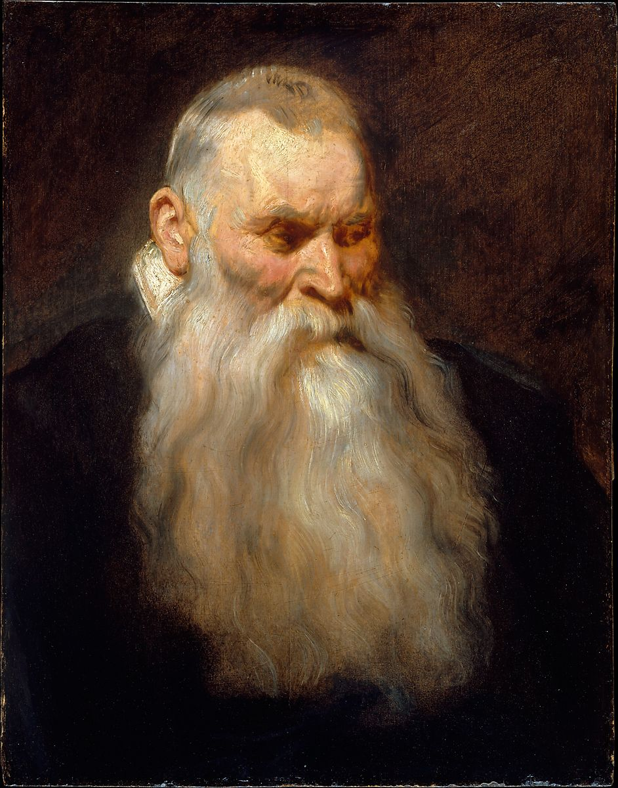

<head>
<meta charset="UTF-8" />
<meta name="keywords" content="drawing, painting" />
<meta name="description" content="drawings by Sunjy" />
<title>Sunjy</title>
<link rel="shortcut icon" type="image/x-icon" href="../../mImages/mCommon/favicon.ico" media="screen" />
<link rel="stylesheet" type="text/css" href="../../mCsses/mCommon/mCssA.css" />
<link rel="stylesheet" type="text/css" href="../../mCsses/mCommon/mCssB.css" />
<link rel="stylesheet" type="text/css" href="../../mCsses/mCommon/mCssC.css" />
<link rel="stylesheet" type="text/css" href="../../mCsses/mCommon/mCssD.css" />
<link rel="stylesheet" type="text/css" href="../../mCsses/mContent/mCssA.css" />
<link rel="stylesheet" type="text/css" href="../../mCsses/mContent/mCssB.css" />
<link rel="stylesheet" type="text/css" href="../../mCsses/mContent/mCssC.css" />
<link rel="stylesheet" type="text/css" href="../../mCsses/mContent/mCssD.css" />
</head>
<script type="text/javascript" src="../../mScripts/mContent/mContentAA.js" /></script>
<script type="text/javascript" src="../../mScripts/mContent/mContentAB.js" /></script>
<script type="text/javascript" src="../../mScripts/mContent/mContentAC.js" /></script>
<script type="text/javascript" src="../../mScripts/mContent/mContentAD.js" /></script>
<script type="text/javascript"></script> 
<script type="text/javascript">
document.write('<div class="mImgAbsolute"></div>');
/*
document.write('<p class="mFontSizeBColor" />From a white paper...</p>');
document.write('<table class="center"><tr><td>');
document.write('');
document.write('</td></tr></table>');
*/
</script>


<script type="text/javascript">
document.write('<p class="mFontSizeBColor" />Study Head of an Old Man with a White Beard</p>');
document.write('<p class="mFontSizeSColor" />By Anthony van Dyck, ca. 1617–20. Rubens’s practice of using real people as models for figures in his religious and mythological scenes was followed closely in Antwerp by his younger colleagues Jacob Jordaens and Anthony van Dyck. The present picture was once attributed to Rubens, but its comparatively soft forms and textured surfaces are typical of the young Van Dyck and contrast with Rubens’s emphatic modeling and incisive draftsmanship.<br></p>');
document.write('<table class="center" /><tr><td>');
document.write('" />');
document.write('</td></tr></table>');
</script>


